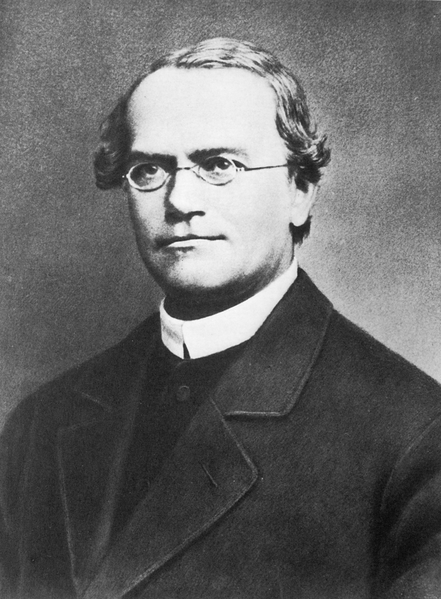

Gregor Mendel (born July 20, 1822, Heinzendorf, Silesia, Austrian Empire [now Hynčice, Czech Republic]—died January 6, 1884, Brünn, Austria-Hungary [now Brno, Czech Republic]) was a botanist, teacher, and Augustinian prelate, the first person to lay the mathematical foundation of the science of genetics, in what came to be called Mendelism.
I am convinced that it will not be long before the whole world acknowledges the results of my work
Born to a family with limited means in German-speaking Silesia, Mendel was raised in a rural setting. His academic abilities were recognized by the local priest, who persuaded his parents to send him away to school at the age of 11. His Gymnasium (grammar school) studies completed in 1840, Mendel entered a two-year program in philosophy at the Philosophical Institute of the University of Olmütz (Olomouc, Czech Republic), where he excelled in physics and mathematics, completing his studies in 1843. His initial years away from home were hard, because his family could not sufficiently support him. He tutored other students to make ends meet, and twice he suffered serious depression and had to return home to recover. As his father’s only son, Mendel was expected to take over the small family farm, but he preferred a different solution to his predicament, choosing to enter the Altbrünn monastery as a novitiate of the Augustinian order, where he was given the name Gregor.
The move to the monastery took him to Brünn, the capital of Moravia, where for the first time he was freed from the harsh struggle of former years. He was also introduced to a diverse and intellectual community. As a priest, Mendel found his parish duty to visit the sick and dying so distressing that he again became ill. Abbot Cyril Napp found him a substitute-teaching position at Znaim (Znojmo, Czech Republic), where he proved very successful. However, in 1850 Mendel failed an exam—introduced through new legislation for teacher certification—and was sent to the University of Vienna for two years to benefit from a new program of scientific instruction. As at Olmütz, Mendel devoted his time at Vienna to physics and mathematics, working under Austrian physicist Christian Doppler and mathematical physicist Andreas von Ettinghausen. He also studied the anatomy and physiology of plants and the use of the microscope under botanist Franz Unger, an enthusiast for the cell theory and a supporter of the developmentalist (pre-Darwinian) view of the evolution of life. Unger’s writings on the latter made him a target for attack by the Roman Catholic press of Vienna shortly before and during Mendel’s time there.
In the summer of 1853, Mendel returned to the monastery in Brünn, and in the following year he was again given a teaching position, this time at the Brünn Realschule (secondary school), where he remained until elected abbot 14 years later. He attempted the teacher exam again in 1856, although the event caused a nervous breakdown and a second failure. However, these years were his greatest in terms of success both as teacher and as consummate experimentalist. Once abbot, his administrative duties came to occupy the majority of his time. Moreover, Mendel’s refusal to permit the monastery to pay the state’s new taxes for a religious fund led to his involvement in a long and bitter dispute with the authorities. Convinced that this tax was unconstitutional, he continued his opposition, refusing to comply even when the state took over the administration of some of the monastery’s estates and directed the profits to the religious fund.
In 1854 Abbot Cyril Napp permitted Mendel to plan a major experimental program in hybridization at the monastery. The aim of this program was to trace the transmission of hereditary characters in successive generations of hybrid progeny. Previous authorities had observed that progeny of fertile hybrids tended to revert to the originating species, and they had therefore concluded that hybridization could not be a mechanism used by nature to multiply species—though in exceptional cases some fertile hybrids did appear not to revert (the so-called “constant hybrids”). On the other hand, plant and animal breeders had long shown that crossbreeding could indeed produce a multitude of new forms. The latter point was of particular interest to landowners, including the abbot of the monastery, who was concerned about the monastery’s future profits from the wool of its Merino sheep, owing to competing wool being supplied from Australia.
Mendel chose to conduct his studies with the edible pea (Pisum sativum) because of the numerous distinct varieties, the ease of culture and control of pollination, and the high proportion of successful seed germinations. From 1854 to 1856 he tested 34 varieties for constancy of their traits. In order to trace the transmission of characters, he chose seven traits that were expressed in a distinctive manner, such as plant height (short or tall) and seed colour (green or yellow). He referred to these alternatives as contrasted characters, or character-pairs. He crossed varieties that differed in one trait—for instance, tall crossed with short. The first generation of hybrids (F1) displayed the character of one variety but not that of the other. In Mendel’s terms, one character was dominant and the other recessive. In the numerous progeny that he raised from these hybrids (the second generation, F2), however, the recessive character reappeared, and the proportion of offspring bearing the dominant to offspring bearing the recessive was very close to a 3 to 1 ratio. Study of the descendants (F3) of the dominant group showed that one-third of them were true-breeding and two-thirds were of hybrid constitution. The 3:1 ratio could hence be rewritten as 1:2:1, meaning that 50 percent of the F2 generation were true-breeding and 50 percent were still hybrid. This was Mendel’s major discovery, and it was unlikely to have been made by his predecessors, since they did not grow statistically significant populations, nor did they follow the individual characters separately to establish their statistical relations.
Mendel realized further that he could test his expectation that the seven traits are transmitted independently of one another. Crosses involving first two and then three of his seven traits yielded categories of offspring in proportions following the terms produced from combining two binomial equations, indicating that their transmission was independent of one another. Mendel’s successors have called this conclusion the law of independent assortment.
Mendel went on to relate his results to the cell theory of fertilization, according to which a new organism is generated from the fusion of two cells. In order for pure breeding forms of both the dominant and the recessive type to be brought into the hybrid, there had to be some temporary accommodation of the two differing characters in the hybrid as well as a separation process in the formation of the pollen cells and the egg cells. In other words, the hybrid must form germ cells bearing the potential to yield either the one characteristic or the other. This has since been described as the law of segregation, or the doctrine of the purity of the germ cells. Since one pollen cell fuses with one egg cell, all possible combinations of the differing pollen and egg cells would yield just the results suggested by Mendel’s combinatorial theory.
Mendel first presented his results in two separate lectures in 1865 to the Natural Science Society in Brünn. His paper “Experiments on Plant Hybrids” was published in the society’s journal, Verhandlungen des naturforschenden Vereines in Brünn, the following year. It attracted little attention, although many libraries received it and reprints were sentw out. The tendency of those who read it was to conclude that Mendel had simply demonstrated more accurately what was already widely assumed—namely, that hybrid progeny revert to their originating forms. They overlooked the potential for variability and the evolutionary implications that his demonstration of the recombination of traits made possible. Most notably, Swiss botanist Karl Wilhelm von Nägeli actually corresponded with Mendel, despite remaining skeptical as to the significance of his results and doubting that the germ cells in hybrids could be pure.
Mendel appears to have made no effort to publicize his work, and it is not known how many reprints of his paper he distributed. He had ordered 40 reprints, the whereabouts of only eight of which are known. Other than the journal that published his paper, 15 sources are known from the 19th century in which Mendel is mentioned in the context of plant hybridization. Few of these provide a clear picture of his achievement, and most are very brief.
By 1871 Mendel had only enough time to continue his meteorological and apicultural work. He traveled little, and his only visit to England was to see the Industrial Exhibition in 1862. Bright disease made his last years painful, and he died at the age of 61. Mendel’s funeral was attended by many mourners and proceeded from the monastery to the monastery’s burial plot in the town’s central cemetery, where his grave can be seen today. He was survived by two sisters and three nephews.
Gregor Mendel, through his work on pea plants, discovered the fundamental laws of inheritance. He deduced that genes come in pairs and are inherited as distinct units, one from each parent. Mendel tracked the segregation of parental genes and their appearance in the offspring as dominant or recessive traits. He recognized the mathematical patterns of inheritance from one generation to the next. Mendel's Laws of Heredity are usually stated as:
The genetic experiments Mendel did with pea plants took him eight years (1856-1863) and he published his results in 1865. During this time, Mendel grew over 10,000 pea plants, keeping track of progeny number and type. Mendel's work and his Laws of Inheritance were not appreciated in his time. It wasn't until 1900, after the rediscovery of his Laws, that his experimental results were understood.